结论：尾盘翻红但没止跌，仍是下跌中枢延伸，总仓 ≤4 成、少动多看。 上证收 3476.88（+0.01%），高开 3490.14 上冲 3497.81 后回落创新低 3455.04、尾盘拉回；收盘低于 MA5 3514.89 共 38.01 点，未破 3510（差 12.19 点）。创业板最高 2227.41，距 2230 仅 2.59 点。温度 20 度、一/二类热点全无；池内 8 只全部无方法买点。
① 「市场运行沉闷，尾盘稍微向上翻红」 —— 上证 +0.01% 收 3476.88、创业板 +0.29% 收 2189.82，深成 -0.02%、上证50 +0.07%，红盘幅度极小 ✓
② 「早晨高开上冲后回落下去创新低，但尾盘被拉回没跌下去」 —— 开 3490.14（高开 13.67 点）→ 高 3497.81 → 低 3455.04（60 日新低，较 11/25 再低 13.61 点）→ 收 3476.88（低点上方 21.84 点）✓
③ 「要么向下延伸，要么向上突破 3510 点后出 15 分钟底分型的三买」 —— 最高 3497.81，距 3510 差 12.19 点未破；收盘低于 MA5 3514.89 共 38.01 点，止跌三要件第 2 条仍不满足 ✓
④ 「创业板指数没见底，向上突破 2230 点出 15 分钟底分型三买」 —— 最高 2227.41，差 2.59 点；收 2189.82 低于 MA5 2228.95 共 39.13 点 ✓
⑤ 「市场缩量，防范转阴跌」 —— 两市成交额 13174 亿，环比 -4.8%（昨 13831 亿）✓
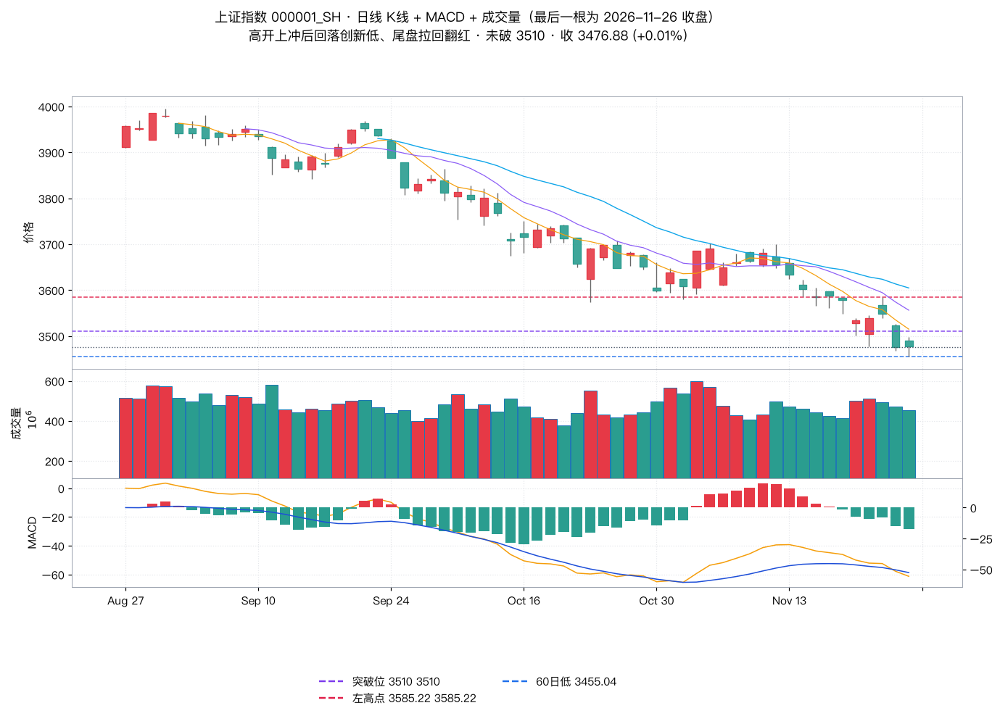
最低 3455.04 创 60 日新低，未破 3510
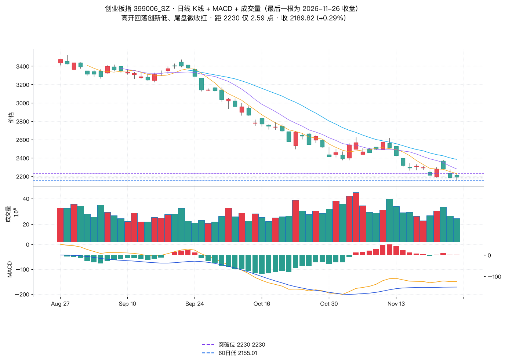
最高 2227.41，距 2230 差 2.59 点
以下两张为 15 分钟参照图（老师口径的 15 分钟底分型/三买，我方未复算，仅作位置参照）。
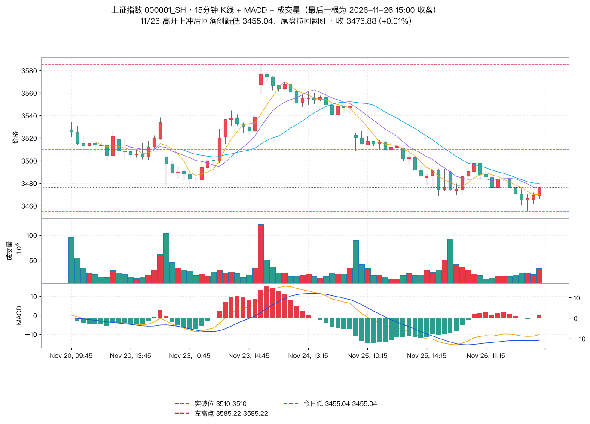
上证 15 分钟：11/26 尾盘自 3455.04 拉回收 3476.88，未复算 15 分钟结构
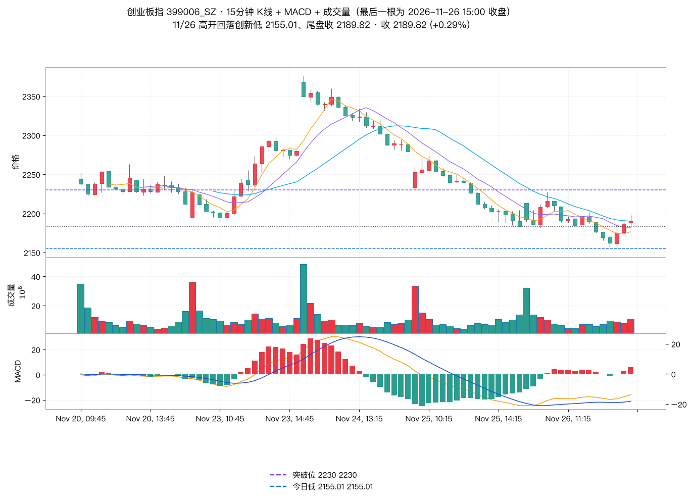
创业板 15 分钟：最高 2227.41 未触 2230、低 2155.01，未复算 15 分钟结构
| 老师口径（11-26 收评） | 实测 | 判定 |
|---|---|---|
| 「市场温度 20 度，一类热点无、二类热点无」 | 涨停 65 只分散 33 个行业；跌超 5% 155 只、昨涨停 51 只今日跌 17 只 | 相对成立 |
| 「华为概念内常山北明、拓维信息异动涨停」 | 常山北明 +9.98%、拓维信息 +10.03% 均封板；华为篮子 +4.06%（6涨1跌） | 一致 |
| 「以常山北明走势分析，目前临近上方压力高点」 | 收 13.88＝当日最高（封板），距 60 日高 14.41 仅 0.53 元 | 一致 |
| 「国产算力…北方华创和中微公司等下跌还在延续，没有止跌」 | 北方华创 -3.14%、中微公司 -6.52% 续跌；但自建篮子 +2.65%（4涨3跌） | 口径差异 |
| 「人形机器人和文化传媒等也在补跌中」 | 人形机器人 -4.24%（0涨9跌）、申万传媒 -0.86%（33涨95跌） | 一致 |
| 「可以跟踪高股息方向走势的演变」 | 高股息红利 +0.50%（4涨3跌）；申万银行 +0.97%（39涨0跌）、煤炭 +2.42% 居涨幅榜前 | 相对成立 |
① 今日是指数微红、结构分化：创业板 +0.29% 对科创50 -1.36%，差 1.65 个百分点，不是普涨修复。
② 资金面边际改善、价格未确认：成交额环比 -4.8%，但 ETF 份额全线回升（中证500ETF +9.29%、上证50ETF +5.28%、创业板ETF +2.66%）——上期「无增量承接」本期反转。
③ 唯一有涨停梯度的是华为概念（常山北明、拓维信息封板），但涨停分散在 33 个行业、机器人 -4.24% 仍在补跌。动作：盘中不追涨，等回调止跌与新热点酝酿。
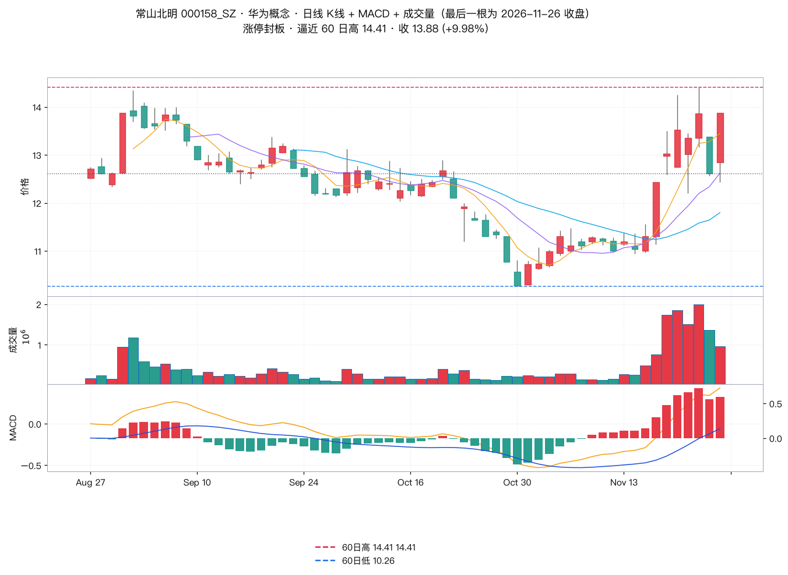
涨停封板，距 60 日高 14.41 差 0.53 元
| 标的 | 收盘 | 老师定性 | 关键位 / 触发条件 | 实测印证 | 动作 |
|---|---|---|---|---|---|
| 康龙化成 300759（大医药） | 40.86 +2.35% | 中线 · 无买点 | 支撑 37.51 / 压力 43.58，突破后回抽三买 | 最高 42.30 未触压力（差 1.28 元），站上 MA5 40.34 | 等 |
| 瑞芯微 603893（端侧AI） | 192.47 -0.63% | 中线 · 无买点 | 观察 2-3 天，等内部横盘震荡 | 最低 188.18 破 MA5 196.19（差 8.01 元） | 等 |
| 海天瑞声 688787（机器人） | 92.30 -5.44% | 中线 · 无买点 | 突破压力 111.22 后三买 | 最高 99.80 未触压力（差 11.42 元），破 MA5 96.93 | 等 |
| 伊利股份 600887（大消费·防守） | 33.43 -0.45% | 中线 · 不追涨 | 盯 31.95：跌破＝顶背驰可高抛 | 最低 33.14 未破（差 1.19 元）；最高 33.78 再创 60 日新高 | 等 |
| 创业板ETF 159915（创业板宽基） | 2.217 +0.82% | 中线 · 无买点 | 有力度突破 2.244 后出底分型回抽三买 | 最高 2.242 距触发位差 0.002 元；收 2.217 低于 MA5 2.25 | 等 |
| 中国船舶 600150（船舶） | 34.60 -0.92% | 中线 · 无买点 | 突破 36.75 后 15 分钟底分型三买 | 最高 35.15 未触压力（差 1.60 元），低于 MA5 34.73 | 等 |
| 中芯国际 688981（国产算力） | 116.50 -4.51% | 中线 · 无买点 | 在跌破的左低点止跌，出日线有力度底分型 | 最低 115.76 跌破 11/23 左低点 117.55（差 1.79 元） | 等 |
| 兆易创新 603986（存储芯片） | 197.58 -0.35% | 短线 · 无买点 · 超跌思路 | 突破 204.48 后出底分型回抽确认 | 最低 194.00 创 60 日新低；最高 202.83 距触发位差 1.65 元 | 等 |
「无方法买点」为老师原文口径，不改写成可试探。池子变化：华丰科技本期未再提及（11/25 已短线剔除，维持剔除）；新增华为概念观察（常山北明、拓维信息）但未给买点；本期无潜在强势教学案例。
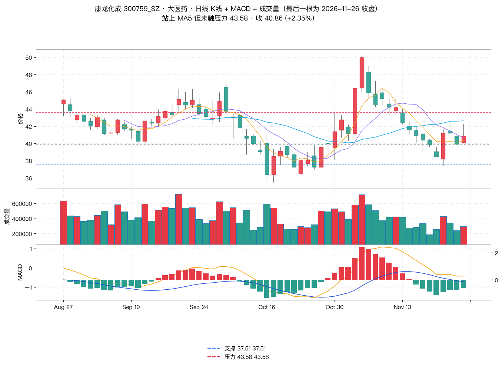
收 40.86（+2.35%），站上 MA5 未触压力 43.58
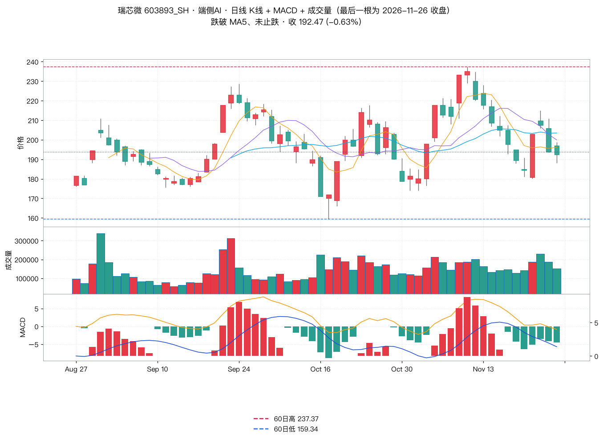
收 192.47（-0.63%），破 MA5 196.19 未止跌
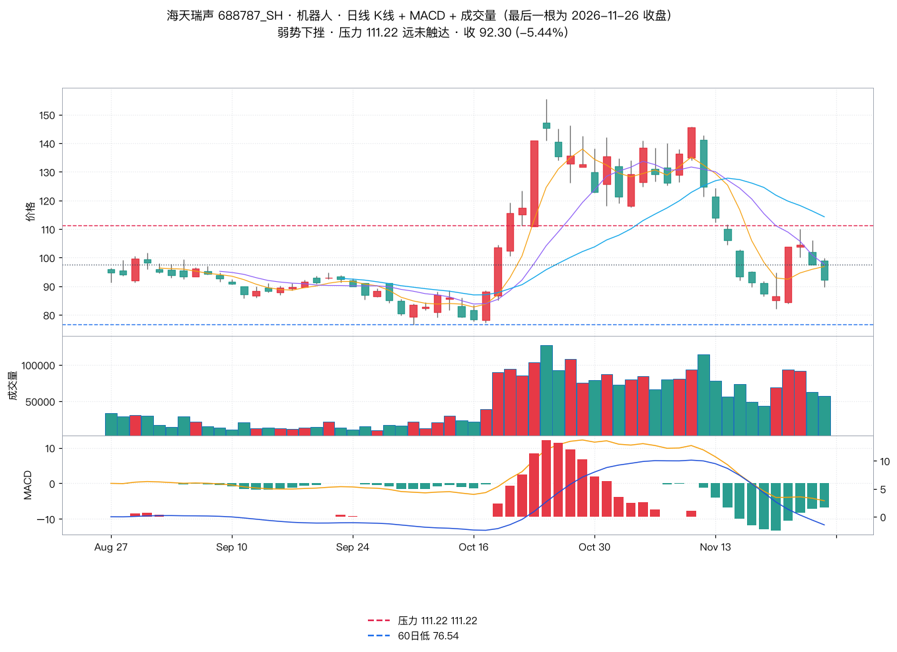
收 92.30（-5.44%），压力 111.22 远未触达
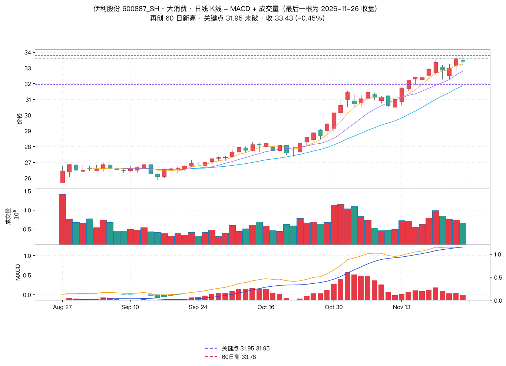
收 33.43（-0.45%），再创 60 日新高、31.95 未破
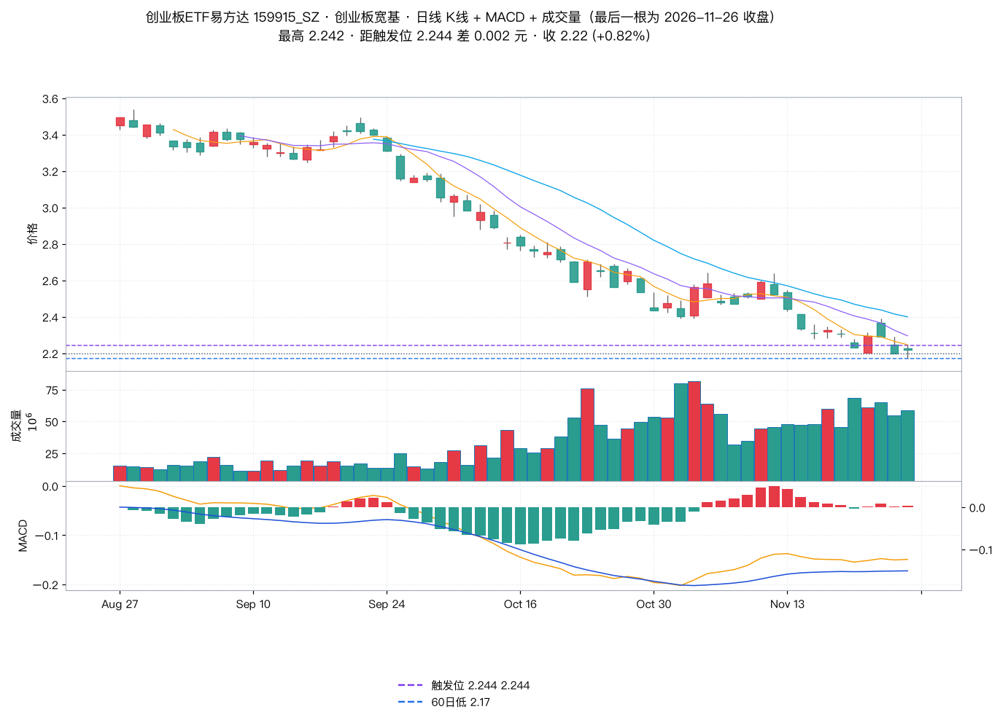
最高 2.242，距触发位差 0.002 元
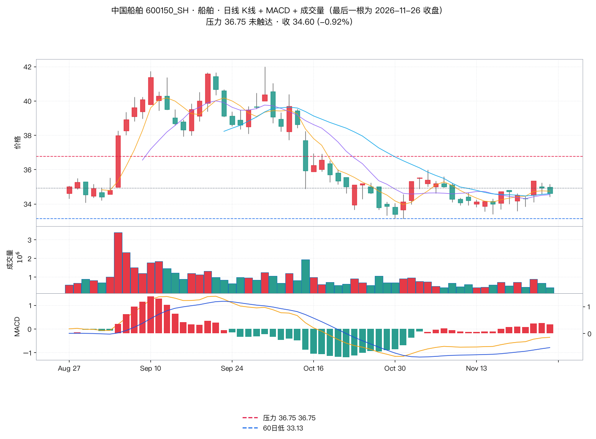
收 34.60（-0.92%），压力 36.75 未触达
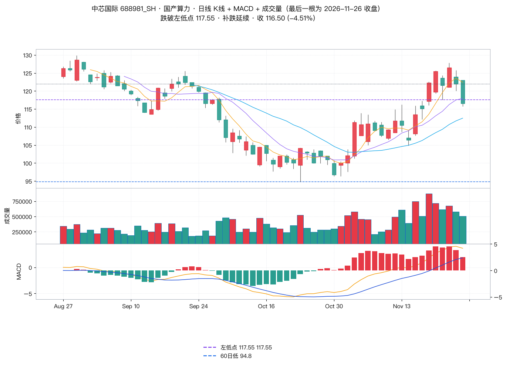
收 116.50（-4.51%），跌破左低点 117.55
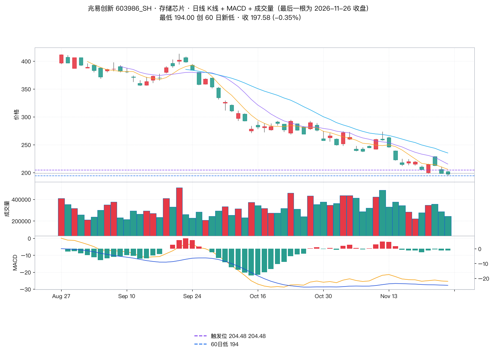
收 197.58（-0.35%），最低 194.00 创 60 日新低
① 上证：向上突破 3510（今日最高 3497.81，差 12.19 点）后出 15 分钟底分型回抽确认三买；若继续下破，等日线有力度底分型。
② 创业板指：向上突破 2230（今日最高 2227.41，差 2.59 点）出 15 分钟底分型三买＝短线止跌概率；未破则仍无买点。
③ 创业板ETF 159915：今日最高 2.242 距触发位 2.244 仅差 0.002 元 —— 看能否有效站上 2.244 并收在其上。
④ 中芯国际：今日最低 115.76、已跌破 11/23 左低点 117.55 —— 看能否在 115.76 附近止跌并出日线有力度底分型，否则等小级别中枢共振。
⑤ 量能与防守盘：两市成交额回到 1.38 万亿以上（今日 13174 亿）才算有承接；伊利股份关键点 31.95（今日最低 33.14，差 1.19 元）跌破即顶背驰大概率出现、可高抛。
| 老师口径 | 实测 | 判定 |
|---|---|---|
| 「国产算力方向…下跌还在延续，没有止跌」 | 点名北方华创 -3.14%、中微公司 -6.52% 属实；篮子却 +2.65%（中际旭创 +5.18%、华胜天成 +6.03% 拉红） | 口径差异 |
| 「华为概念有异动，但无法上热点榜」 | 无热点榜数据源；旁证涨停 65 只分散 33 个行业，无板块集中度 | 无法核验 |
| 「市场温度 20 度，一类热点无、二类热点无」 | 无温度计数据源；旁证涨跌比 0.49:1、跌超 5% 155 只 | 无法核验 |
| 「中国船舶…月线结构扎实收敛」 | 月振幅近 3 月 2.81→7.55→8.30 点（放大），10 月收 33.39 为近 9 个月月收盘新低 | 口径差异 |
| 「背驰段第二次有可能出现阶段低点的位置」 | 措辞由 11/25「无法判断见底止跌」转为「可能出现阶段低点」，属缠论定性未复算 | 无法核验 |
判定词：口径差异 / 无法核验。其余判据当日一致 ✓：尾盘翻红、高开上冲后回落创新低、创业板没见底、国产算力补跌个股、机器人与传媒补跌、高股息可跟踪、8 只无方法买点、各关键位均未触发、伊利未破 31.95。
来源：都业华《高级班》2026-11-26 收评，执业编号 A0400626100004。仅供参考，不作为买卖依据，风险自担。投资有风险，入市需谨慎。
口径：日线取 Tushare 前复权，MA5 / 60 日高低同源；两市成交额＝沪市 000001.SH ＋ 深证综指 399106.SZ；涨跌家数取全市场快照，涨跌停用东财池；板块用自建篮子与申万 L1。缠论定性按老师口径引用，我方未复算。15 分钟参照图取新浪 15 分钟接口（上证成交量与 Tushare 日线分毫不差）。